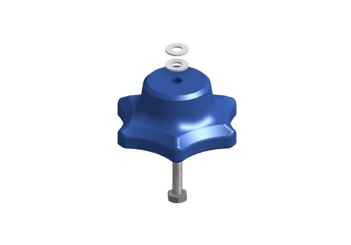
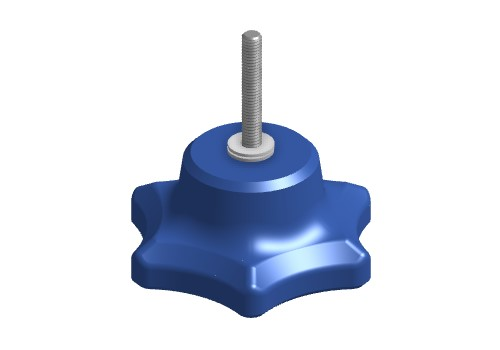
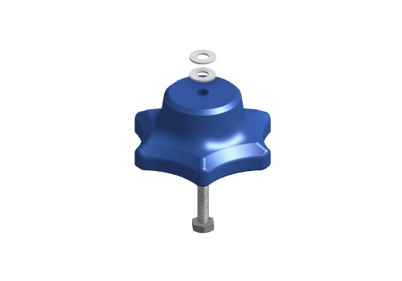
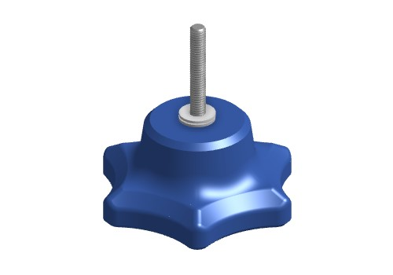
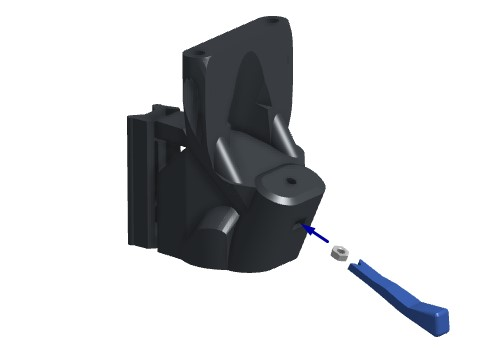
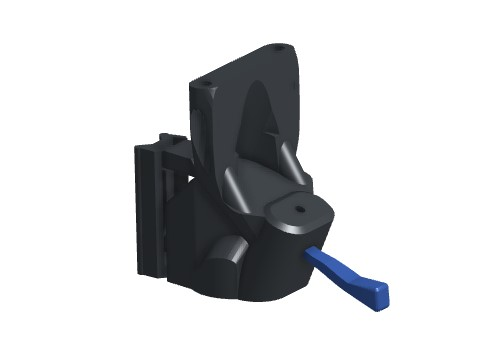
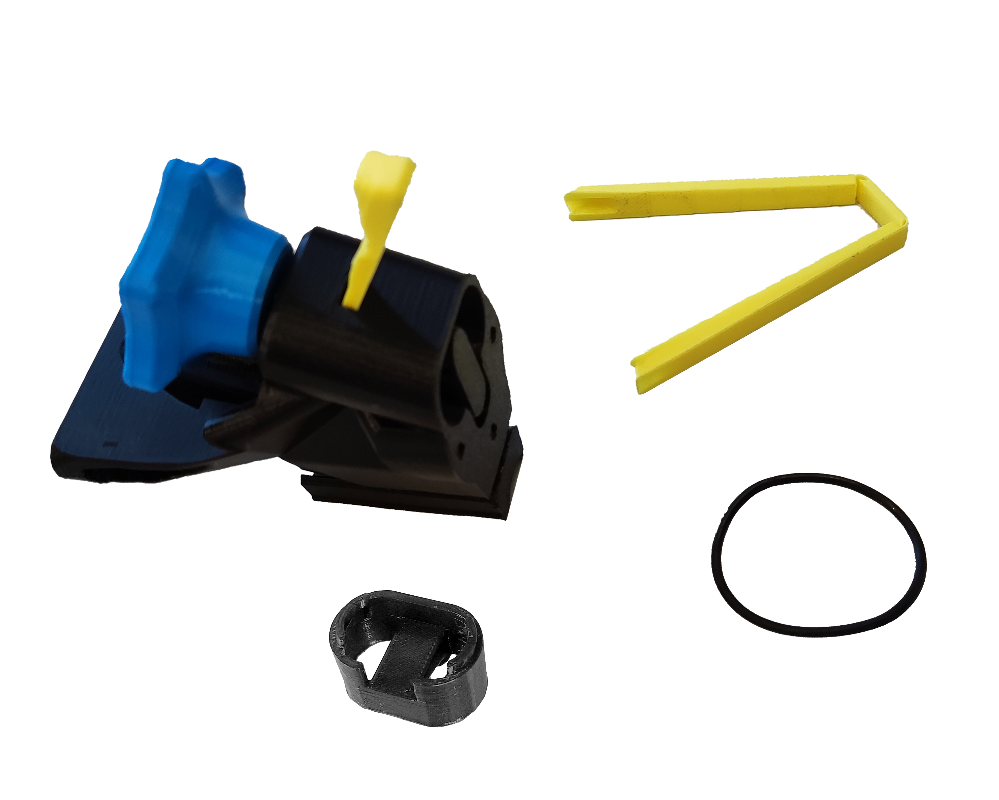
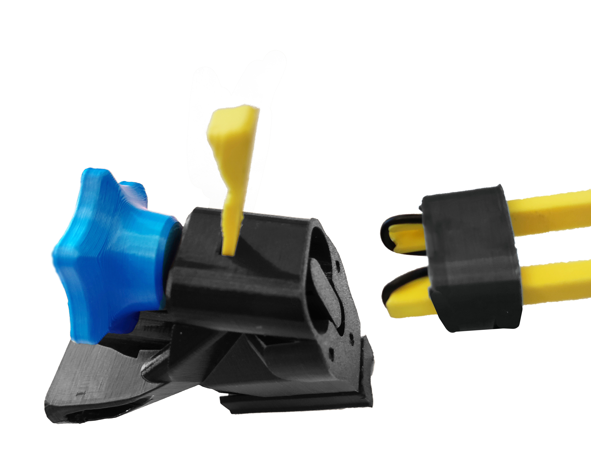
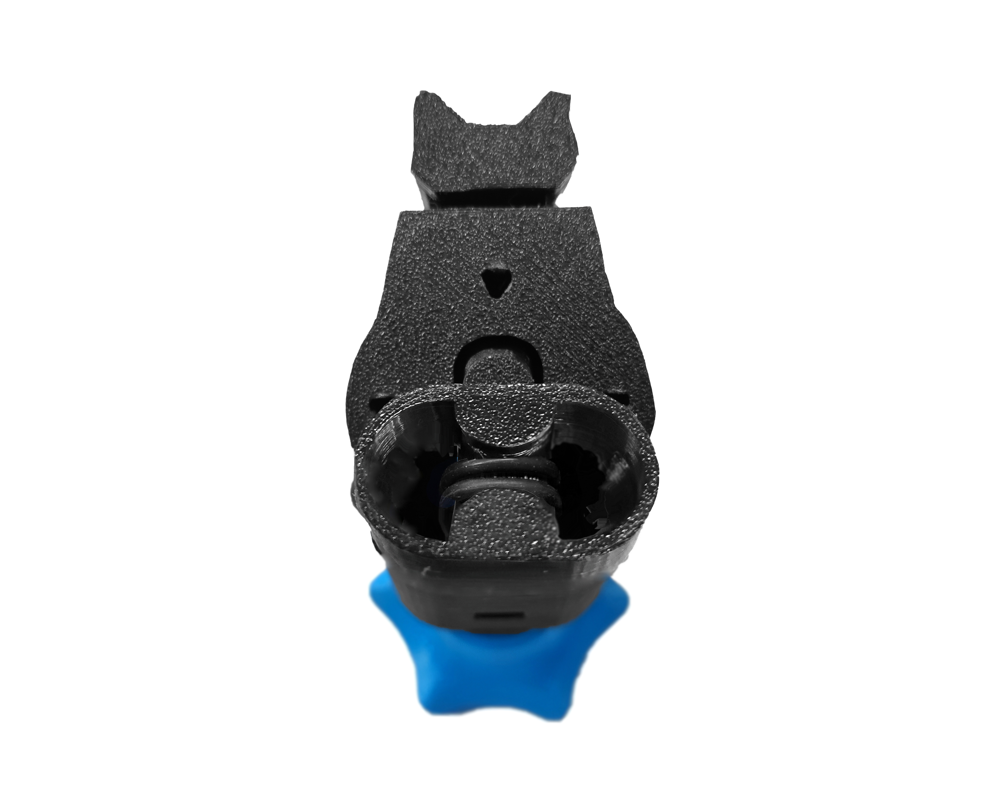

Assemble the focus mechanism

Consumables
- 1 drop of light oil - Optional
Mechanical Components
- 1 M3 nut
- 2 M3 washers
- 1 M3x25mm hex head screw
- 1 O-ring
3D Printed Parts
3D Printed Tools
Step 1: Assemble the thumbwheel
- Push the M3x25mm hex head screw into the thumbwheel.
- Thread the M3 washers onto the screw.
- Place a drop of light oil on the screw thread. You might want to put some kitchen paper or blu roll on your bench to soak up any dribbles of oil.
 



Step 2: Insert the nut
- Push the M3 nut into the slot in the focusing assembly (using the nut insertion tool)


Step 3: Add the thumbwheel
- Screw the thumbwheel assembly into the M3 nut in the focusing assembly.

Step 4: Insert the O ring
- Next, we will insert the O-ring to complete the mechanism.

- Thread the 30mm diameter, 2mm thickness Viton O ring through the two holes in the foot, and use the band insertion tool to stretch the two loops of band as shown in the picture.

Step 5: Click the band into place
- Line the foot up with the hole in the bottom of the focusing assembly, and push on the band insertion tool to click the band into place.
- You should feel two clicks as the two ends of the band hook over the actuator column. It's easier if you use the nut insertion tool to hold the mechanism still as you do this.



Step 6: Remove the tool
- Gently pull the band insertion tool out of the foot.
- The band should pull the foot tight against the focusing assembly as shown.
